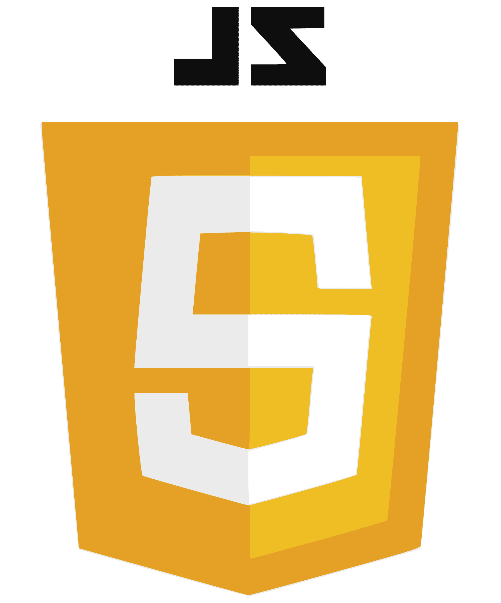
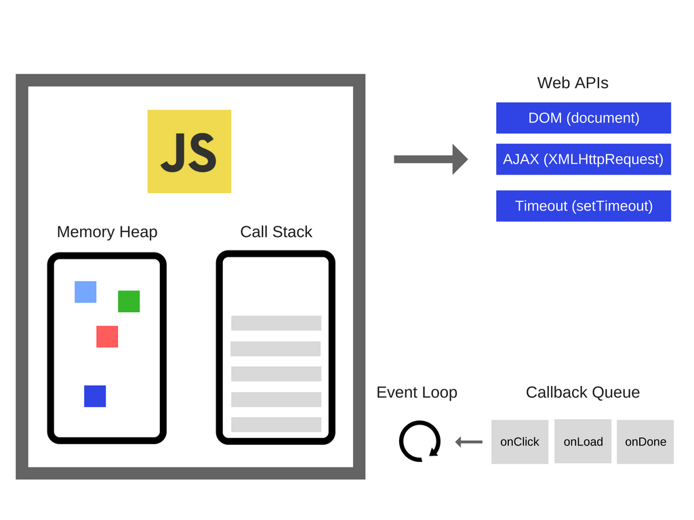

Sobre mí
Susana Beltrán
20245290
Soy estudiante de la Ingeniería de Software y Negocios Digitales de la Escuela Superior de Economía y negocios. Actualmente, curso segundo año de la carreta y, en el futuro, me gustaría liderar equipos o bien, trabajar en front-end.
Desarrollo Web
Durante este ciclo, en la materia de Desarrollo Web, impartida por el MSC. Guillermo Calderón, aprendimos a maquetar páginas web y a usar diseño. Este curso es el primero en la secuencia de desarrollo web y cubre los fundamentos básicos de los lenguajes HTML, CSS y JavaScript, que son los elementos esenciales de cualquier aplicación web. El contenido de todo el ciclo se dividió en las siguientes unidades:
Unidad 1
Introducción al HTML
Principios básicos de HTML, para definir páginas web usando titulos, imágenes, párrafos, etc.

Unidad 2
Introducción a CSS
Principios para controlar el diseño de las páginas HTML. Trabajamos con colores, fuentes, tamaños, etc.
Unidad 3
Maquetación de Sitios Web
Aprendimos a controlar el posicionamiento de los sitios web, el diseño responsivo y media queries.

Unidad 4
Frameworks de Diseño Web Responsivo
El mundo de los Frameworks, específicamente Boostrap, y cómo implementarlos en páginas web.

Unidad 5
Introducción a JS
Lo escencial de JS: sintaxis,funciones y estructuras como arreglos, objetos, etc.
Unidad 6
DOM y JavaScript asincrono
Manipulación del DOM, javascript asincrono, consumo de APIs, etc.
Guías de ejercicios
Guía 1
En esta guía, trabajamos con las etiquetas básicas de html y con las diferentes maneras de usar css en html. El ejercicio principal, el número cuatro, era la creación de una página web de nuestra serie favorita. En ella, debíamos usar todas las etiquetas que habíamos aprendido durante las clases: apliqué encabezados, párrafos, tablas, etc.
Guía 2
En esta guia, trabajamos con los selectores para párrafos y para todas las demás etiquetas. Además, se requería que utilizaramos la mayor cantidad de selectores, por lo que encontramos diferentes maneras de seleccionar un elemento. El ejercicio principal de esta guía fue nuestra propia biografía (ejercicio 3), en el que aplicamos mencionado anteriormente.
Guía 3
Esta guía es la que contiene más ejercicios. En ella, trabajamos con posicionamiento, como en la aplicación del menú. Por otro lado, volvimos a utilizar algunos archivos de la guia anterior para volver su diseño flexible. Además, trabajamos con otras propiedades interesantes como el index, que utilizamos en el último ejercicio.
Guía 4
En esta guía, trabajamos con las medias queries. Nuevamente, en esta guía trabajamos con algunos archivos de la guia anterior, esta vez, aplicando las medias queries a sus diseños. Por último, trabajamos con el portafolio, esta página, que reune todos los conceptos para que los usemos y apliquemos, creando un diseño más completo.
FODA
Fortalezas
- Nunca había trabajado con animaciones y gracias a esta materia, aprendí a hacerlo
- Nunca había trabajado con posicionamiento, pero ahora entiendo más cómo funciona y puedo aplicarlo a mis diseños
- Antes no entendía la diferencia para centrar los elementos, siempre ponía todos los tipos de align, esperando que uno funcionara (aprendí a centrar los div)
Oportunidades
- Aprendí a trabajar con Github y las versiones, lo que me permite un mejor desarrollo durante lo que falta de la carrera y para mi vida laboral
- Trabajar con diseño de interfaces en mi desarrollo profesional
- Trabajar en equipo y de manera colaborativa, fomentando la comunicación clara
Debilidades
- Aprender a realizar diseños que sean más intuitivos y que visualmente sean agradables
- Trabajar el código de manera más ordenada y efectiva para que otros desarrolladores también puedan entenderlo
- Hacer código más funcional: menos líneas, más valor
Amenazas
- Me da miedo utilizar nuevas formas de hacer las cosas y que el resultado sea malo, lo que retrasa o detiene mi crecimiento en el área
- Me cuesta resolver problemas relacionados a los trabajos colaborativos, lo que hace que me tarde más tiempo resolviendo los conflictos que haciendo el desarrollo web
- Suelo quedarme con lo que conozco, por lo que mis diseños siempre se parecen y no hay variación visual en mi desarrollo web.